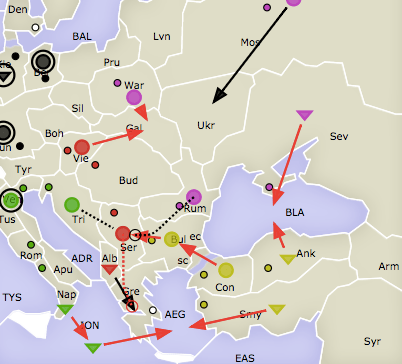

A few weeks ago, I traveled to DC for the 2018 world championships of Diplomacy. The tournament featured 4 rounds, and so I thought I’d share a bit about each round, including several of the mistakes I made on several of my boards. I also want to talk a little bit about why I made some of the choices that I decided to make. I wish I could go beyond a couple of seasons with screenshots, but I didn’t take any pictures of the games and have forgotten the exact movements. I’ve provided pictures if I remembered them.
Round 1, Board 8
Austria: Jorge Zhang
England: Jordan Connors
France: Vanessa Smith
Germany: Pierre Khawaja
Italy: Patrick Oathout
Russia: Bernard Andrioli
Turkey: Victor Degliame
I knew Bernard Andrioli/Russia from a previous game where we had a key lepanto type of deal. I didn’t remember too many of the details, but I thought we had worked pretty well together and so I decided to talk to him out of the gate. I was pretty enthusiastic in talking with Bernard, but he seemed pretty distant which made me wonder if he could really be trusted. He also seemed to remember us not working together in our previous game, which added to my doubt. Still, I negotiated a DMZ in Galicia with him due to the fact that neither of us knew the other 5 players and they were all online players.
After talking with Italy, I got a really good feeling about him as he swore that he was not going to Trieste. Very few people can say that with a straight face with direct eye contact and lie about it. So I figured I didn’t have to worry about Trieste. I also talked with Turkey, who wasn’t very interested in opening to Armenia. I think he actually admitted in our conversation that he wanted to work with Russia. This started making me really worry about Bernard opening to Galicia.
So, I make what is probably my largest mistake all weekend: Vienna-Galicia. I end up making it. Italy holds in Venice and Turkey opens pretty standard. While it seems minor, what it did was antagonize my relationship with Bernard and prevent me from easily blocking Trieste in the fall. I think this is why Italy decides to stab me the next year despite us having a decent understanding in spring 01. What I should have done is ask Bernard for a bounce in Galicia. That would have prevented me from damaging our relations and also would completely change the dynamic between Italy and I.
(bear with me as I am recreating this from memory a week after the fact, and only remember my region).
Ok. I go apologize to Bernard immediately. I really want to patch things up with him because otherwise I am waiting to be killed. I tell him that he can do whatever he wants me to do with Galicia and I offer to support him to Rumania. Instead, he tells me to go to Vienna. I write that order.
I then rush over to Italy and get another confirmation that he will not go to Trieste. I figure he might go for it, but I also figure that if he does I can build A Budapest and it won’t be a big deal. I talk with Turkey but it is clear he is uninterested in going after Russia in the slightest. I make another mistake here. I should have connected the dots before heading into the fall moves, which are a catastrophe.
At first I am shocked by the moves which leave me at 0 builds. I couldn’t understand why Turkey would try to help Italy into Greece and risk him getting to five builds. I’m a bit disoriented, but I don’t have time to think about it so I go to Russia and tell him that we need to work together and pointed out my move from Gal to Vie. I get a very mild response from him, so I drop the big question, “Are you going to Galicia?”. He reluctantly tells me that he has to go to Galicia because it is the only move that makes sense for him.
This is when the puzzle pieces come together for me. It’s a Russia-Turkey Alliance, which is why Turkey wanted to support Italy into Greece. Turkey never intended for Italy to be in Greece at all- he just wanted us to bounce there for the steamroller! I rush over to Italy and tell him that it’s a RT and that he has to support Serbia to hold and move to the Aegean Sea. I also talk with England and convince him to start making his way over to St Petersburg to hit Russia as well.
Something like this happens, which changes the dynamic in the south. I’m pretty confident in my Italian ally and that he understands the threat of the RT, so I don’t spend a lot of time talking to him. This is a mistake because he ends up stabbing me. I also talk with Russia and Turkey and try to get one of them to turn on the other.
Instead of supporting me, Italy ends up supporting Russia into Budapest. So, I immediately grab him and try to figure out why he would be helping Russia, especially with the RT still very strong. He apologizes, and we make a plan to put him into Budapest. I also talk with Turkey at this point, who is now interested in attacking Russia. We all follow through, and things are starting to finally look good for me.
The next few years unfortunately do not go very well. I keep asking Italy to give me back a home supply center, which he agrees to, and then doesn’t follow through with. Unfortunately, I can’t force him to give me back a home supply center, so I ask Turkey to help me out. Turkey stabs me too, and I end up on one supply center in Budapest. At this point in the game, I thought I would be eliminated as it was pretty clear that Italy and Turkey were solid allies. I think though that Italy felt really bad about stabbing me so often. So when I pitched him on attacking Turkey, he jumped on board despite me secretly knowing that it would probably not work. I felt though that it was my only chance of survival, so I suppressed those complaints and tried my best to get Italy and Turkey to fight.
It ends up disastrously for Italy, who actually ends up losing supply centers after the stab. It also wastes precious time because by now England has reigned supreme over the West: controlling almost all of Germany and northern Russia. So I get both Italy and Turkey together and tell them that if they don’t work together, then England will solo the board. The rest of the game is pretty boring- we get to the stalemate lines and I end up getting Warsaw, getting to 2 supply centers.
England makes a pretty good pitch to me here, which is that I am just helping the guys who screwed me over all game. I heavily considered throwing a solo, but I decided that it was a bit early in the tournament to throw a solo (and I also really wanted to eat). So I decided to stick to the stalemate line. We call a draw vote soon after, and everyone votes for the draw.
Thinking back on this round though, I think I could have easily vetoed this draw and gotten away with it. Everyone on the board was exhausted of playing- we were one of the last boards still going. In addition, I had a build after taking Warsaw and was thus completely behind Turkey/Italy’s lines. It would have been very easy to convince Italy to keep pressing England with his fleets through the MAO and Turkey to keep pressing northern Russia and Germany, while taking back my home centers. I don’t know if they would have let me get away with it- but reflectively 2 supply centers is a very low amount of points, and I might as well have tried since I had nothing to lose.
Round 3, Board 4
Round 3, Board 4
Austria: Doc Binder
England: John Avina
France: Jorge Zhang
Germany: Christian Pedone
Italy: Tim Richardson
Russia: Peter McNamara
Turkey: Mike McMillie
That was a really long AAR! So I’m going to keep the rest of them short to save time.
I ended up skipping round 2 since everyone had a mandatory drop round, and two of my friends had agreed to try out my game. So, the next day I had this board.
Here’s the story. I talked with England and asked for a DMZ in the Channel, which he agreed to. I then talked with Germany, who told me that England was going to the Channel. Hmmmm. So, I talked to England again and confronted him about it. “Are you going to the Channel,” I asked. England kept being shifty and not giving me a clear answer, which was a pretty dead giveaway to me that he would be going to the Channel. I felt like this was very odd though, and I suspected an attack on Burgundy by Christian. The thing was, I didn’t want to make him upset by ending up in Burgundy. Thus, I settled on the mediocre Par-Bur, Mar-Bur, Bre-Eng.
This ends up being very, very bad. Italy is in Piedmont, Germany does not go to Burgundy, and England bounces me in the Channel. Germany/Christian actually talks to me here and tells me how much of a blunder it was. He brings up a very good point, which is that he wouldn’t have told me that England was going to the Channel if he had planned on going to Burgundy. I apologize, and I meant it since it is looking like I will not get any builds this year. My only hope is to convince Italy to not take Marseilles.
I spend most of this season talking to Italy. I tell him that while he could take Marseilles, he wouldn’t be able to keep it. And that me not getting any builds would throw the board balance off- with Christian getting three builds and then having the ability to roll over me and be a runaway board leader, especially with England insisting on going to the Channel every turn. In return for not taking Marseilles, I promise that I would help him however I could for the rest of the game, and also that he would be able to decide what I built.
Italy buys my argument, and he lets me keep Marseilles, instead sending his army back to Venice. I walk into Burgundy and bounce the Channel again, and build a unit in Paris. After this event though, the game actually becomes pretty boring. There is an eastern triple of Austria/Turkey/Russia, and in response, Germany is able to convince both me and England to go to the lines to stop them. I send my fleets to Italy to help to repay him for letting me build in 01. I have several good opportunities to stab, but I think that would have been a bad move as both Germany and England were threatening to throw if one of them were betrayed. In addition, I would have had to pull me fleets back from helping Italy, which I didn’t really want to do.
Despite my help, Italy gets eliminated because of several bad guesses. And the game is now stalled at a 7/6/6/5/5/5, and the draw actually passes. It was pretty frustrating because it wasn’t a good result for anyone. Afterwards, Germany told me that he probably would have given me a supply center to put me from 6 to 7, since Austria was on 7 and might have broken up his alliances if he was no longer the board top. Unfortunately, I didn’t think of this argument and so it didn’t happen. It’s something I will keep in mind for future games though.
Round 4, Board 8
Austria: Nicolas Sahuguet
England: Brian Ecton
France: Edi Birsan
Germany: Michael Topczewski
Italy: Dan Wang
Russia: Rachael Storey
Turkey: Jorge Zhang
This game was pretty disastrous as I ended up repeatedly being my worst enemy throughout the game. This is in part due to a meta-game shift: as this was the last round before the top board, I (and most other players) would need a large score to win. Anyway, my initial negotiations went really well. Russia immediately offered to DMZ the Black Sea and bounce in Armenia. Now, I normally would be very cautious about this type of deal as Russia could theoretically break the DMZ. However, I’ve actually been secretly interested in trying an opening where Russia and Turkey DMZ the Black Sea in FTF for a long time, and my read on Russia was that this was a sincere offer. This decision was solidified by my neighboring powers. Austria was a player I had played with several times, and is very good at diplomacy. Italy on the other hand was dead set on attacking France to the point of being very difficult to negotiate with. This set up could go out of hand quickly if I didn’t move to check Austria.
I spent most of my time talking to Italy, which was pretty much a mistake since it drained very valuable time that I could have used to find out the rest of the board dynamics. I eventually got him to agree to move to Trieste though. I also got Russia to move to Galicia- and I make a huge mistake here which is I tell her in the last few minutes before the deadline to scrap the plan and move Sevastopol to Rumania. I was thinking that the bounce in Armenia would be a wasted move, but it ends up biting me back later. Anyway, I am very frustrated by the opening moves: Austria uses Budapest to bounce Gal and Vienna to bounce Trieste, and is able to get his fleet into Albania. Moreover, Russia moves Moscow to St Petersburg, which is not terrible but it also makes it difficult to attack Austria.
I do some investigating and it turns out both Russia and Italy spilled the beans about their moves to Austria, which is pretty frustrating since I had been lying to Austria over the turn to not arouse his suspicions. Moreover, Italy moves his fleet to the Tyrhenian Sea, which makes it impossible for me to try and convince him to move to Greece and bounce the Austrian fleet in Albania. Regardless, here I know that I need to bounce Serbia as it would just incentivize Austria and Russia too much to attack me if he ended up in Serbia/Greece and 2 builds. This way, I also know that I can guarantee the capture Greece in the next year. Italy moves further west- heading to Piedmont and convoying an army to Tunis. He’s completely out of position now. I do end up in the Aegean Sea and bounce Serbia as expected.
Here is the problem that I mentioned earlier. Due to my insistence of sending Sevastopol to Rumania, it creates a situation where the only way to get Russia’s newly built A Sevastopol to Rumania is to let the fleet in Rumania head to the Black Sea. This is very suboptimal for me as it means that Russia can stab me brutally at any time. In fact, had I spent less time talking to Italy and more time thinking through basic opening strategy, the right moves would have been to have Russia move to Ukraine and Galicia, and bounce in Armenia so that we could support Ukraine to Rumania.
I tell Russia that she can go to the Black Sea anyway though, after some careful calculation. I figure that if I refuse to let her into the Black Sea, there’s a very high chance that she will go there anyway and work with Austria. I also know that we need the army in Rumania to have any shot of defeating Austria, and so I take the gamble. It pays off- Russia never stabs me for the rest of the game despite many players telling her to. Props to her. However, it also boxes me in and I actually spent the vast majority of the game a few supply centers behind Russia.
I also figure that the best way to deal with Italy is to encourage him to fight France at this point, as it’s clear that it is what he unconditionally wants to do. We actually end up working very well together here, and I forgo taking Tunis or Naples to help him against France. He never fully trusts me though, which is a bummer since if we were working perfectly I think there would have been a decent chance of taking a French supply center. Unfortunately, we get stuck and I have to stab him at the end of the game.
Anyway, a few years pass and Austria is on 2 centers and decides to join the Russia/Turkey alliance. We have Germany surrounded and can take Munich/Berlin, and Russia has fleets all the way in the North Sea. Here is a critical point in the game where I make a few diplomatic missteps. Firstly, Germany, Russia, and I have a discussion on what we want out of the game. Russia just wants a shared board top. Germany wants a good result. I say here that I just want a decent result as well, but Germany starts questioning my previous games and what result I needed to get on the top board. What I should have done here is say that I had two very mediocre results (it was true) and that I was just looking to have fun. I said instead something along the lines of, “well, if I got a solo I would get on the top board.” It’s a slip up that I regretted as soon as I said it, but it immediately turns both Germany and Russia against me, and for the rest of the game they become pretty dead set on not letting me get anywhere above 8 supply centers. I try to cover it up by saying that my only goal in the game is to end up higher than Edi Bersan, who was playing France, and that I’d draw if we took most of his centers and eliminated him. This works for about one season: Russia decides to essentially hold all of her units in place, but Germany ends up stabbing France by entering Burgundy. He backs out however, likely due to one of my other diplomatic/tactical slip-ups.
This one is a bit nuanced, but Austria had been extremely loyal to me once he hit 2 supply centers. He wrote whatever orders I requested without any questions. However, during this turn he was set to gain a supply center and get a build. I really didn’t want Nicolas to have a build because I knew this could very quickly snowball and get out of hand. So I stab him by taking one of his home centers, which prevents him from building. This removed any incentive for him to keep working with me, since he realized that I was never going to let him grow. Nicholas is pretty upset, and demands an explanation for why I stabbed him. I goof here and basically tell him the truth, which is that he’s a really good player and that I don’t want him to ever be a threat to me- if he’s out of the equation than I can likely finish with a strong result and possibly solo. That’s not what he wants to hear. He joins the Germany/Russia anti-Turkey coalition to stop me from getting above 8 supply centers, and it’s very dangerous since he’s a very strong tactician. I could have done couple things to stop this situation, and I probably shouldn’t have stabbed him in the first place. I think that I could have likely talked him into not getting a build had I confronted him about it in advance. I could have also let him get a build- there was a good chance he would have kept working with me.
At this point, inside I know that I’ve been completely defeated. With the looming threat of Germany, Austria, and Russia taking my centers if I ever grow, and also the stalemated Med, it’s clear that I won’t ever do any better than 8 supply centers. Worse, I continue vetoing draws, which allows France and Germany to grow to 8 and 7 supply centers and only reduces my score further. It also results in everyone being increasingly upset, as someone at the table is preventing everyone from going to bed for some reason. Honestly, the only reason I kept denying the draw was out of a denial to believe I had been beaten, and the false hope that someone would shake up the board. According to the TD, the game auto-draws if 3 seasons pass without any supply centers changing hands. This occurs, and the game finally ends.
Round 5, Board 2
Austria: Nicholas DeLateur
England: Adam Silverman
France: Rob Cienki
Germany: Sven Vasseur
Italy: Jorge Zhang
Russia: Jonathan Frank
Turkey: Pat Kelly
There isn’t actually a lot to say about this game because for 95% of the game, I was best buddies with Nicholas Delateur and we stomped all over the board. The other 5% of the time, I was stabbing Nicholas Delateur unsuccessfully, and then begging for forgiveness the next season. Towards the end of the game, England pitches that the three of us work together to three-way board top, and we all agree. In the end, the game gets drawn 9-9-10, and we all get pretty decent scores.
One notable moment was spring 01. One of the things I floated early on in my negotiations with Nicholas was the idea of him giving me Trieste. When I play Italy, the biggest question for me is how I can get the crucial fifth build. Nicholas wanted to ally with me out of the gate because of the dynamic of him and Russia/Turkey, but I also felt that it would be incredibly easy for him to leave me on 4 supply centers since he was pretty adamant about not giving me Trieste. So, I decided to take it anyway.
In our conversation afterwards, Nicholas was pretty clear that this was not the type of alliance he wanted to have, and requested Trieste back. However, I knew that there was no way for him to safely kick me out of Trieste (he was in Vienna and Serbia, and if he did I would be able to retreat to Budapest). With no reason to make up with Nicholas just yet, I decided to take a risk by trying to get Turkey to support my convoy into Greece. Turkey doesn’t follow through though, and causes me and Austria to bounce. It doesn’t end up being a big deal for me and Austria because we are able to negotiate a way for him to move me through to Serbia and take Greece for himself- and then grab Bulgaria. From then on, it is very easy to take out Turkey, and I then make short work of France with England while Nicholas takes on Germany and Russia. I stab Nicholas again at a later point in the game as I expected it to be a 3 supply center stab- it ends up failing as Nicholas predicts it perfectly and it is only a one dot stab. Instead of blowing each-other’s results up, we work it out again and end on pretty comfy scores.
Whew- that was a lot! I hope you enjoyed reading these AARs. They were mostly to help me process through the games I played, but you may have found them interesting. Let me know what you think in the comments, and make sure to subscribe for more content like this.